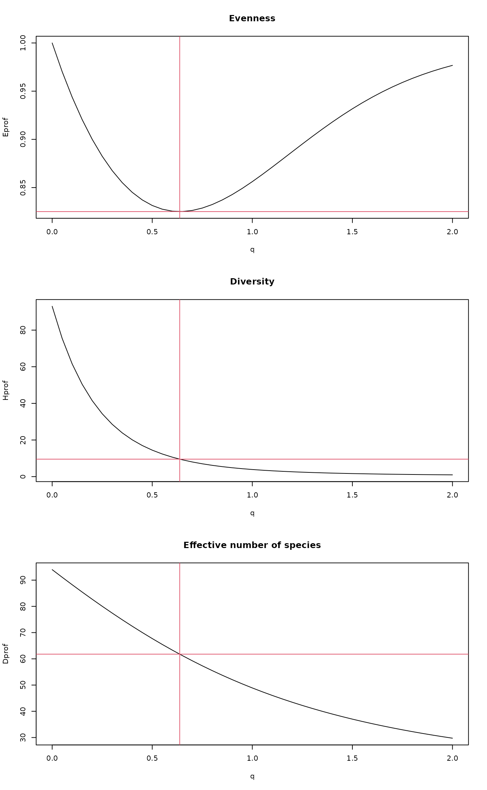

Scale Parameter at the Minimum of the Tsallis Evenness Profile
eventstar.RdThe function eventstar finds the minimum (\(q^*\)) of the
evenness profile based on the Tsallis entropy. This scale factor
of the entropy represents a specific weighting of species
relative frequencies that leads to minimum evenness of the
community (Mendes et al. 2008).
Details
The function eventstar finds a characteristic value of the scale
parameter \(q\) of the Tsallis entropy corresponding to
minimum of the evenness (equitability) profile based on Tsallis entropy.
This value was proposed by Mendes et al. (2008) as \(q^*\).
The \(q^\ast\) index represents the scale parameter of the one parameter Tsallis diversity family that leads to the greatest deviation from the maximum equitability given the relative abundance vector of a community.
The value of \(q^\ast\) is found by identifying the minimum
of the evenness profile over scaling factor \(q\) by
one-dimensional minimization. Because evenness profile is
known to be a convex function, it is guaranteed that underlying
optimize function will find a unique solution
if it is in the range c(0, qmax).
The scale parameter value \(q^\ast\) is used to
find corresponding values of diversity (\(H_{q^\ast}\)),
evenness (\(H_{q^\ast}(\max)\)),
and numbers equivalent (\(D_{q^\ast}\)). For calculation
details, see tsallis and Examples below.
Mendes et al. (2008) advocated the use of \(q^\ast\) and corresponding diversity, evenness, and Hill numbers, because it is a unique value representing the diversity profile, and is is positively associated with rare species in the community, thus it is a potentially useful indicator of certain relative abundance distributions of the communities.
Value
A data frame with columns:
qstarscale parameter value \(q\ast\) corresponding to minimum value of Tsallis based evenness profile.
EstarValue of evenness based on normalized Tsallis entropy at \(q^\ast\).
HstarValue of Tsallis entropy at \(q^\ast\).
DstarValue of Tsallis entropy at \(q^\ast\) converted to numbers equivalents (also called as Hill numbers, effective number of species, ‘true’ diversity; cf. Jost 2007).
See tsallis for calculation details.
References
Mendes, R.S., Evangelista, L.R., Thomaz, S.M., Agostinho, A.A. and Gomes, L.C. (2008) A unified index to measure ecological diversity and species rarity. Ecography 31, 450–456.
Jost, L. (2007) Partitioning diversity into independent alpha and beta components. Ecology 88, 2427–2439.
Tsallis, C. (1988) Possible generalization of Boltzmann-Gibbs statistics. J. Stat. Phis. 52, 479–487.
Note
Values for \(q^\ast\) found by Mendes et al. (2008) ranged
from 0.56 and 1.12 presenting low variability, so an
interval between 0 and 5 should safely encompass
the possibly expected \(q^\ast\) values in practice,
but profiling the evenness and changing the value of
the qmax argument is advised if output values
near the range limits are found.
Author
Eduardo Ribeiro Cunha edurcunha@gmail.com and Heloisa Beatriz Antoniazi Evangelista helobeatriz@gmail.com, with technical input of Péter Sólymos.
See also
Tsallis entropy: tsallis
Examples
data(BCI)
(x <- eventstar(BCI[1:5,]))
#> qstar Estar Hstar Dstar
#> 1 0.6146389 0.4263687 10.524584 67.03551
#> 2 0.6249249 0.4080263 9.534034 57.66840
#> 3 0.6380858 0.4062032 9.225458 57.69174
#> 4 0.6245808 0.4062213 10.140189 65.50247
#> 5 0.6404825 0.4219957 9.828138 66.96440
## profiling
y <- as.numeric(BCI[10,])
(z <- eventstar(y))
#> qstar Estar Hstar Dstar
#> 1 0.6372529 0.4117557 9.546332 61.77715
q <- seq(0, 2, 0.05)
Eprof <- tsallis(y, scales=q, norm=TRUE)
Hprof <- tsallis(y, scales=q)
Dprof <- tsallis(y, scales=q, hill=TRUE)
opar <- par(mfrow=c(3,1))
plot(q, Eprof, type="l", main="Evenness")
abline(v=z$qstar, h=tsallis(y, scales=z$qstar, norm=TRUE), col=2)
plot(q, Hprof, type="l", main="Diversity")
abline(v=z$qstar, h=tsallis(y, scales=z$qstar), col=2)
plot(q, Dprof, type="l", main="Effective number of species")
abline(v=z$qstar, h=tsallis(y, scales=z$qstar, hill=TRUE), col=2)

par(opar)